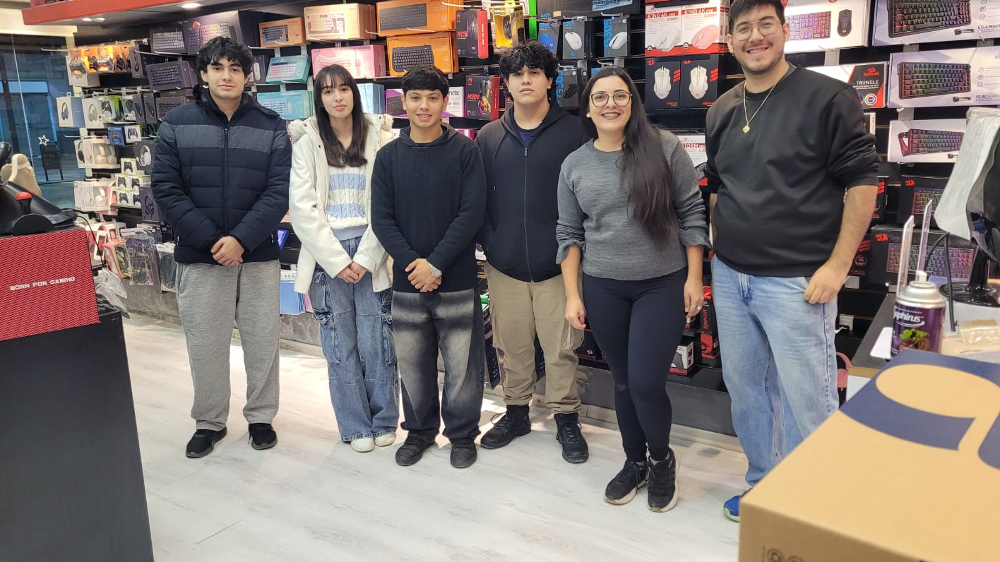

Contamos con un equipo profesional dedicado
a brindar el mejor servicio en cada etapa
del proceso de reparación.

Nuestro Equipo
Recepcionistas
Son el primer punto de contacto con el cliente. Se encargan de registrar los equipos que ingresan al taller, documentar el problema reportado, asignar un número de orden y mantener informado al cliente sobre el estado de su reparación en todo momento.
- Registro de ingreso de equipos
- Atención al cliente presencial y telefónica
- Seguimiento y notificación de órdenes
- Entrega de equipos reparados
Área Comercial
Gestionan las relaciones con proveedores, controlan el stock de repuestos y accesorios, y se encargan de la facturación y cobro de los servicios. También manejan las promociones y acuerdos con clientes corporativos.
- Gestión de proveedores y compras
- Control de stock e inventario
- Facturación y cobros
- Acuerdos comerciales y promociones
Técnicos
El corazón del taller. Realizan el diagnóstico técnico de cada equipo, identifican fallas en hardware y software, y ejecutan las reparaciones con herramientas especializadas. Trabajan con todo tipo de dispositivos electrónicos.
- Diagnóstico de hardware y software
- Reparación de placas y componentes
- Cambio de pantallas y baterías
- Recuperación de datos
Empaquetado y Envíos
Garantizan que cada equipo reparado llegue a su destino en perfectas condiciones. Se encargan del embalaje seguro, la coordinación con servicios de transporte y el seguimiento de los envíos hasta la entrega final al cliente.
- Embalaje seguro de equipos
- Coordinación con transportistas
- Seguimiento de envíos
- Control de entregas y devoluciones
Nuestros Valores
Rapidez
Reparaciones en el menor tiempo posible sin sacrificar calidad.
Transparencia
El cliente siempre sabe qué se hace y cuánto cuesta antes de aprobar.
Garantía
Todas nuestras reparaciones cuentan con garantía por escrito.
Compromiso
Nos comprometemos con cada equipo como si fuera el nuestro.